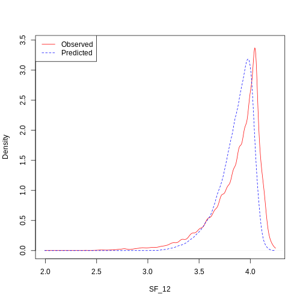
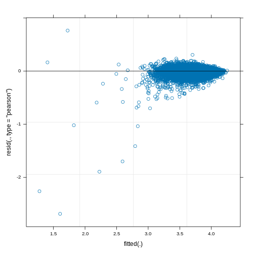

Mental Well-Being
Introduction.
Prediction of future Short Form 12 Mental Component Score (SF-12 MCS).
Methods
What methods are used? Justification due to output data type. explanation of model output.
Data
What variables are included? Why is this output chosen. What explanatory variables are used and why are they chosen
Results
What are the results. Coefficients tables. diagnostic plots. measures of goodness of fit.

Fig. 8 plot of chunk SF12_Output
## Linear mixed model fit by REML ['lmerMod']
## Formula: SF_12 ~ time + scale(SF_12_last) + scale(age) + factor(sex) +
## relevel(factor(ethnicity), ref = "WBI") + relevel(factor(region),
## ref = "Scotland") + relevel(factor(education_state), ref = "1") +
## scale(hh_income) + factor(housing_quality) + factor(neighbourhood_safety) +
## factor(loneliness) + scale(nutrition_quality) + scale(ncigs) + I(factor(ncigs > 0)) + (1 | pidp)
## Data: data
## Weights: weight
##
## REML criterion at convergence: Inf
##
## Scaled residuals:
## Min 1Q Median 3Q Max
## -56.385 -0.245 0.097 0.386 16.960
##
## Random effects:
## Groups Name Variance Std.Dev.
## pidp (Intercept) 0.007167 0.08466
## Residual 0.002422 0.04921
## Number of obs: 53940, groups: pidp, 28030
##
## Fixed effects:
## Estimate Std. Error t value
## (Intercept) 5.2397331 0.8345248 6.279
## time -0.0006733 0.0004138 -1.627
## scale(SF_12_last) 0.1144965 0.0011534 99.267
## scale(age) 0.0214391 0.0012782 16.772
## factor(sex)Male 0.0203990 0.0022973 8.879
## relevel(factor(ethnicity), ref = "WBI")BAN 0.0004421 0.0143677 0.031
## relevel(factor(ethnicity), ref = "WBI")BLA 0.0305918 0.0093296 3.279
## relevel(factor(ethnicity), ref = "WBI")BLC 0.0181985 0.0120887 1.505
## relevel(factor(ethnicity), ref = "WBI")CHI 0.0163969 0.0171940 0.954
## relevel(factor(ethnicity), ref = "WBI")IND 0.0002626 0.0071384 0.037
## relevel(factor(ethnicity), ref = "WBI")MIX -0.0042839 0.0093127 -0.460
## relevel(factor(ethnicity), ref = "WBI")OAS -0.0009285 0.0101948 -0.091
## relevel(factor(ethnicity), ref = "WBI")OBL -0.0003878 0.0326152 -0.012
## relevel(factor(ethnicity), ref = "WBI")OTH -0.0694297 0.0183040 -3.793
## relevel(factor(ethnicity), ref = "WBI")PAK 0.0049871 0.0084321 0.591
## relevel(factor(ethnicity), ref = "WBI")WHO 0.0154492 0.0056132 2.752
## relevel(factor(region), ref = "Scotland")East Midlands 0.0110873 0.0059159 1.874
## relevel(factor(region), ref = "Scotland")East of England 0.0049586 0.0055977 0.886
## relevel(factor(region), ref = "Scotland")London 0.0004213 0.0057530 0.073
## relevel(factor(region), ref = "Scotland")North East -0.0047024 0.0070295 -0.669
## relevel(factor(region), ref = "Scotland")North West 0.0006363 0.0055444 0.115
## relevel(factor(region), ref = "Scotland")Northern Ireland -0.0001035 0.0079633 -0.013
## relevel(factor(region), ref = "Scotland")South East 0.0011843 0.0052579 0.225
## relevel(factor(region), ref = "Scotland")South West -0.0026575 0.0056919 -0.467
## relevel(factor(region), ref = "Scotland")Wales -0.0053164 0.0072406 -0.734
## relevel(factor(region), ref = "Scotland")West Midlands -0.0012968 0.0057667 -0.225
## relevel(factor(region), ref = "Scotland")Yorkshire and The Humber 0.0008975 0.0057567 0.156
## relevel(factor(education_state), ref = "1")0 -0.0083117 0.0085502 -0.972
## relevel(factor(education_state), ref = "1")2 0.0030260 0.0085258 0.355
## relevel(factor(education_state), ref = "1")3 -0.0001873 0.0089178 -0.021
## relevel(factor(education_state), ref = "1")5 0.0095867 0.0089951 1.066
## relevel(factor(education_state), ref = "1")6 0.0014439 0.0086299 0.167
## relevel(factor(education_state), ref = "1")7 -0.0004484 0.0088233 -0.051
## scale(hh_income) 0.0058742 0.0011286 5.205
## factor(housing_quality)Low -0.0328952 0.0040623 -8.098
## factor(housing_quality)Medium -0.0037926 0.0023982 -1.581
## factor(neighbourhood_safety)2 0.0040650 0.0025375 1.602
## factor(neighbourhood_safety)3 0.0161708 0.0033714 4.796
## factor(loneliness)2 -0.0765887 0.0025868 -29.607
## factor(loneliness)3 -0.2656038 0.0046211 -57.477
## scale(nutrition_quality) 0.0092193 0.0011070 8.328
## scale(ncigs) -0.0062644 0.0014932 -4.195
## I(factor(ncigs > 0))TRUE -0.0138892 0.0049971 -2.779
##
## Correlation matrix not shown by default, as p = 43 > 12.
## Use print(summary(model), correlation=TRUE) or
## vcov(summary(model)) if you need it
## optimizer (nloptwrap) convergence code: 0 (OK)
## Gradient contains NAs

Fig. 9 plot of chunk SF12_Output